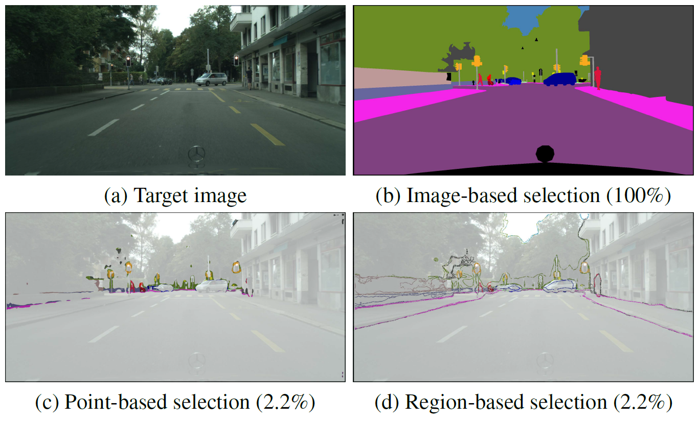
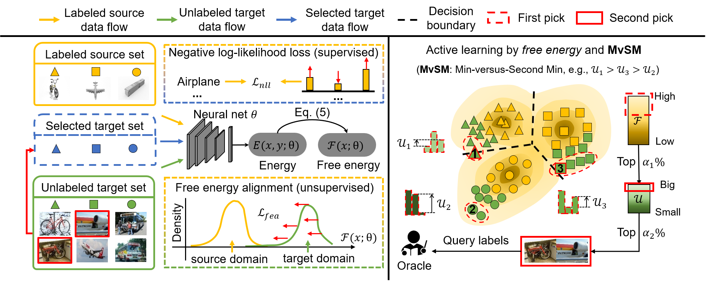

Towards Fewer Annotations: Active Learning via Region Impurity and Prediction Uncertainty for Domain Adaptive Semantic Segmentation
CVPR 2022 (Oral) Binhui Xie, Longhui Yuan, Shuang Li, Chi Harold Liu, Xinjing Cheng

A region-based acquisition strategy for DA Segmentation queries image regions that are both diverse in spatial adjacency and uncertain in prediction output.
PaperCodeVideoSlidesPoster
Active Learning for Domain Adaptation: An Energy-based Approach
AAAI 2022 Binhui Xie, Longhui Yuan, Shuang Li, Chi Harold Liu, Xinjing Cheng, Guoren Wang

A new perspective to select a highly informative subset of unlabeled target data under domain shift via exploiting free energy biases across domains.
PaperCodeVideoSlidesPoster